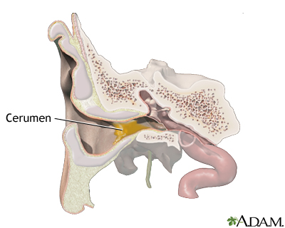
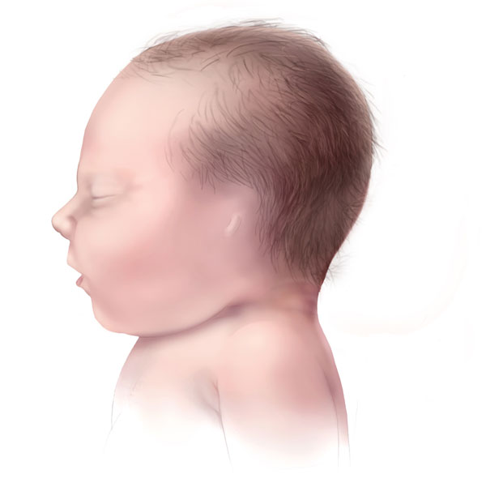
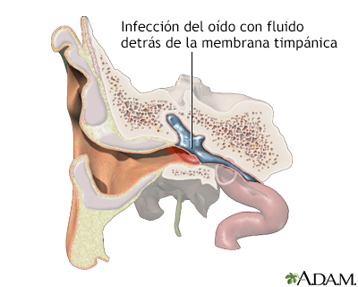

Sintomas de la Pérdida auditiva conductiva
Una pérdida auditiva conductiva reduce la capacidad de oír a un nivel de audición normal. Los síntomas de la pérdida auditiva conductiva son, por lo tanto, una pérdida auditiva total o parcial. La pérdida auditiva puede darse en un solo oído o en los dos. Si la pérdida auditiva conductiva se produce de forma repentina o si la audición va disminuyendo de forma progresiva en poco tiempo, lo recomendable es acudir al médico para someterse a un examen auditivo.
Normalmente, el diagnóstico de pérdida de audición conductiva corre a cargo de un otorrinolaringólogo u otro profesional de la audición mediante una prueba de audición y otros test y reconocimientos en el oído.
Algunas de las principales causas de la Pérdida auditiva conductiva son:
Existen varias causas de la pérdida de audición conductiva, entre ellas se encuentran:

• Pérdida auditiva por exceso de cerumen
Una de las causas más comunes de la pérdida auditiva de tipo conductivo se debe a una obstrucción del canal auditivo externo, normalmente causada por el exceso de cerumen.
Este cerumen adicional puede endurecerse en el conducto auditivo y bloquear el oído, causando compactación. Cuando uno trata de limpiar el oído, puede más bien empujar el cerumen más hacia lo profundo y bloquear el conducto auditivo.

• Malformaciones o fallos
Otras causas de la pérdida auditiva conductiva son las malformaciones como por ejemplo la anotia y la microtia. La anotia es un defecto en el cual la oreja (la parte del oído que se puede ver) no está presente. La microtia es un defecto en el cual la oreja es pequeña y no se ha formado correctamente. La anotia y la microtia generalmente se producen durante las primeras semanas del embarazo. O tambien ademas de esto se puede generar por fallos en el funcionamiento de partes del oído o la presencia de daños en el oído externo o medio. Estos pueden ser infecciones del conducto auditivo, tímpano (membrana timpánica) roto o perforado, oídos muy pequeños, quistes y tumores u objetos extraños en el conducto auditivo.

• Infecciones cronicas
En el oído medio, la pérdida auditiva conductiva se produce debido a infecciones crónicas ya que la infección crónica del oído es el líquido, inflamación o una infección por detrás del tímpano que no desaparece o que sigue reapareciendo. Causa daño crónico o permanente al oído. A menudo involucra un agujero en el tímpano que no sana.
Tambien por la otitis media supurativa, en la que los fluidos llenan el oído medio de modo que el tímpano no puede moverse.

• Enfermedades, daños y cambios físicos
La pérdida auditiva conductiva también puede producirse por enfermedades como la Otitis media, el Síndrome de Ménière, Laberintitis, Colesteatoma, Otosclerosis, Parotiditis entre otras. Tambien por daños y cambios físicos en el oído medio.
La pérdida de la audición puede ocurrir cuando alguna de las partes del sistema auditivo no funciona de la manera normal como por ejemplo:
Lesiones del oido
Las lesiones de oído pueden afectar a la audición y al equilibrio. Esto se debe a que los oídos no solo nos ayudan a oír sino también a mantenernos estables.
Es por esto que los niños necesitan oír bien para desarrollar y utilizar el habla, la escucha y las habilidades sociales. Hasta pérdidas auditivas leves o parciales pueden repercutir sobre lo bien que hablan y entienden el lenguaje. Los problemas de equilibrio pueden influir en cómo se desplazan y cómo se sienten los niños.
¿Cómo ocurren las lesiones de oído?
Caídas, golpes fuertes en la cabeza, lesiones deportivas y hasta escuchar música a gran volumen pueden ocasionar daños en los oídos.
Las lesiones en partes fundamentales del oído, como el tímpano, el conducto auditivo, los huesecillos, la cóclea o el nervio vestibular, pueden conducir a pérdidas auditivas y a problemas de equilibrio.